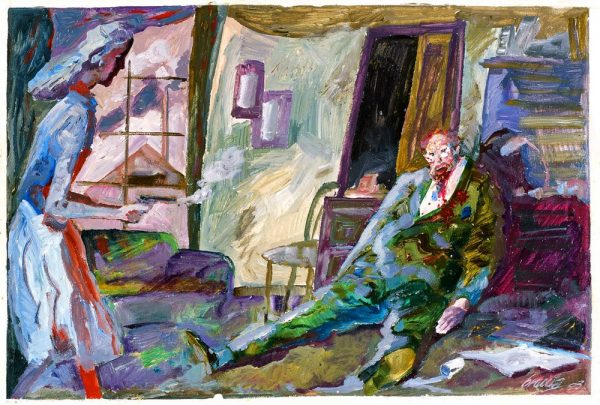
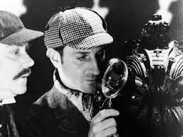
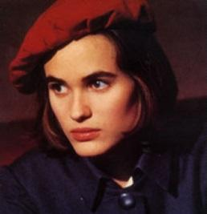

Emma Zunz
RESUMEN DEL CUENTO
Emma Zunz es un cuento relatando el proceso de un crimen. La protagonista, llamada Emma Zunz, planteó un plan de venganza tras enterarse de la muerte de su padre. Su padre Emmanuel, antes de marcharse a Brasil, le había dicho que “el ladrón era Loewenthal”. Al enterarse de que su padre muere por sobredosis de veronal, ella elaboró un plan de justicia en contra Loewenthal (él era uno de los dueños de las fábricas en el cual Emma trabajaba). Este plan la llevó a prostituirse con un hombre desconocido que zarparía del país pronto. Al hacer esto, se comunicó con Loewenthal con el pretexto de hablarle sobre una posible huelga de trabajadores. Cuando confronta a Loewenthal, coge una revólver y le tira disparos de manera apresurada. Sin embargo, por la impaciencia, Emma no pudo hacer que Loewenthal testificara de sus crímenes así que se desconoce si la palabra de Emmanuel fue cierta o no. Después de matarlo, Emma procede a hacer una declaración que decía: "Ha ocurrido una cosa que es increíble... El señor Loewenthal me hizo venir con el pretexto de la huelga... Abusó de mí, lo maté..."
CUENTO DETECTIVESCO
Emma Zunz pertenece a los cuentos detectivescos. Los mismos poseen algunos rasgos muy particulares. Primeramente, el planteamiento de un caso dentro de la historia está desarrollado para que se denote como complejo o difícil de resolver. Sin embargo, la historia está creada de una manera en donde se puede comprender el mismo utilizando la lógica y la razón. Por otro lado, el detective suele ser una persona de carácter observador, inteligente y culta. Finalmente, dentro de la historia se puede aplicar el tema de la investigación que se compone de la observación, el análisis y la deducción.
ADAPTACIONES
-

- Días de odio (1954) (Argentina) - dirigido by Leopoldo Torre Nilsson.
- Emma Zunz (1966) (España) - dirigido by Jesús Martínez León.
- Emma Zunz (1979) (Canadá) - dirigido by Isabel Beveridge.
- Emma Zunz (1984) (Holanda) - dirigido por Peter Delpeut.
- Emma Zunz (1985) (México) - dirigido por Giangiacomo Tabet.
- Emma Zunz (1993) (España) - dirigido por Benoît Jacquot.
VIDEOS SOBRE EL CUENTO
CITAS Y TEMAS DESTACADOS
Citas importantes
- "No durmió aquella noche, y cuando la primera luz definió el rectángulo de la ventana, ya estaba perfecto su plan."
- "El hombre, sueco o finlandés, no hablaba español; fue una herramienta para Emma como esta lo fue para él, pero ella sirvió para el goce y él para la justicia."
- "¿En aquel tiempo fuera del tiempo, en aquel desorden perplejo de sensaciones inconexas y atroces, pensó Emma Zunz una sola vez en el muerto que motivaba el sacrificio? Yo tengo para mí que pensó una vez y que en ese momento peligró su desesperado propósito."
- "Luego tomó el teléfono y repitió lo que tantas veces repetiría, con esas y con otras palabras: Ha ocurrido una cosa que es increíble... El señor Loewenthal me hizo venir con el pretexto de la huelga... Abusó de mí, lo maté..."
Temas destacados
Se destacan los temas de: ambigüedad, espacios laberínticos, el silencio como incentivo, el rol femenino, entre otros.